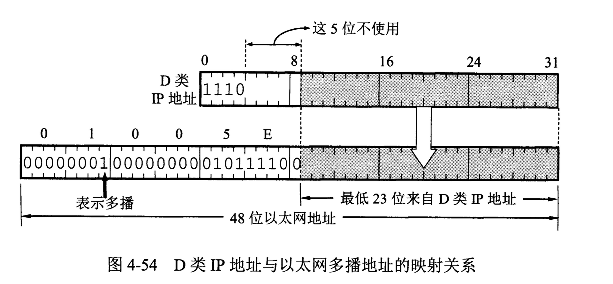

IP多播
一个源点发送到多个终点，即一对多的通信。与单播相比，在一对多的通信中，多播可大大节约网络资源。
1. 基本概念
- 多播路由器(multicast router)
在互联网范围的多播要靠路由器来实现，这些路由起必须增加一些能够识别多播数据报的软件，能够运行多播协议的路由器称为多播路由器。多播路由器当然也可以转发普通的单播IP数据包
- 多播主干网(Multicast Backbone On the InterNET)
MBONE可把分组传播给地点分散但属于一个组的许多台主机。
- 多播地址
多播组的标识符就是IP地址中的D类地址。D类地址的前四位是1110，每一个D类地址标志一个多播组。多播地址只能用于目的地址，而不能用于源地址。
- 多播数据报
多播数据报和一般的IP数据报的区别就是它使用D类IP地址作为目的地址，并且首部中的协议字段值是2，表明使用网际组管理协议IGMP。此外，对多播数据报不产生ICMP差错报文。因此，若在PING命令后面键入多播地址，将永远不会收到响应。
2. 局域网上的硬件多播
D类IP地址与以太网多播地址的映射关系。互联网号码指派管理局IANA拥有的以太网地址块的高24位为00-00-5E，第一个字节的最低位为1时即为多播地址，即01-00-5E-00-00-00到01-00-5E-7F-FF-FF。 由于多播IP地址与以太网硬件地址的映射关系不是唯一的，因此收到多播数据报的主机，还要在IP层利用软件进行过滤，把不是本主机要接收的数据报丢弃。

3. 网际组管理协议IGMP
IP多播需要两种协议，网际组管理协议IGMP和多播路由选择协议。IGMP协议并非在互联网范围内对所有多播组成员进行管理的协议。IGMP不知道多播组包含的成员数，也不知道这些成员都分布在那些网络上，等等。IGMP协议是让连接在本地局域网上的多播路由器知道本局域网上是否有主机（严格讲，是主机上的某个进程）参加或退出了某个多播组。 显然，仅有IGMP协议是不能完成多播任务的。连接在局域网上的多播路由器还必须和互联网上的其他多播路由器协同工作，这就需要多播路由选择协议。 IGMP协议和ICMP协议相似，使用IP数据报传递其报文。属于网际协议IP的一个组成部分。 IGMP的工作分成两个阶段：
- 第一阶段：当某台主机加入新的多播组时，该主机应向多播组的多播地址发送一个IGMP报文，声明自己要称为改组成员。
- 第二阶段：组成员关系是动态的。本地多播路由器要周期性地探询本地局域网上的主机，以便知道这些主机是否还继续是组的成员。
IGMP协议还采取了一些措施来避免多播控制信息给网络增加大量的开销：
- 在主机和多播路由器之间的所有通信都是使用IP多播。
- 多播路由器在探询组成员关系时，只需要对所有的组发送一个请求信息的询问报文，而不需要每个组都发送一个。
- 当同一个网络上连接有多个多播路由器时，它们能迅速和有效地选择其中的一个来探询主机的成员关系。
- 在IGMP的询问报文中有一个数值N，它指明一个最长响应时间。当收到询问时，主机在0到N之间随机选择发送响应所需要经过的时延。因此，若一台主机同时参加了多个多播组，则主机对每一个多播组选择不同的随机数。对应最小时延的响应最先发送。
- 同一组内的每一台主机都要监听响应，只要有本组的其他主机先发送了响应，自己就可以不再发送响应了。
IGMP的报文格式可参阅有关文档RFC 3376。
4. 多播路由选择协议
多播路由选择协议实际上就是要找出以源主机为根节点的多播转发树。
- 多播转发树
在多播转发树上，每一个多播路由器向树的叶节点方向转发收到的多播数据报，但在多播转发树上的路由器不会收到重复的多播数据报（即多播数据报不应在互联网中兜圈子）。
已有多种实用的多播路由选择协议，它们在转发多播数据报时使用以下的三种方法;
- 泛洪与剪除。这种方法适合较小的多播组，而所有的组成员接入的局域网也是相邻接的。一开始，路由器转发多播数据报使用泛洪的方法（这就是广播）。 为避免兜圈子，采用反向路径广播RPB(Reverse Path Broadcasting)策略。RPB的要点是：每一个路由器在收到一个多播数据报时，先检查数据报是否是从源点经最短路径传送来的。进行这种检查很容易，只要从本路由器寻找到源点的最短路径上（之所以叫做反向路径，因为在计算最短路径时是把源点当作终点）的第一个路由器是否就是刚才把数据送来的路由器。若是，就向所有其他方向转发刚才收到的多播数据报，否则就丢弃而不转发。 如果在多播转发树上的某个路由器发现它的下游树枝（即叶节点方向）已没有该多播组的成员，就应把它和下游的树枝一起剪除。
- 隧道技术。隧道技术适用于多播组在地理上很分散的情况。在通过不支持多播的网络时，将多播数据报进行再次封装，即加上普通数据报首部，使之成为向单一目的站发送单播数据报。通过该网络后，剥去首部，使它恢复成原来的多播数据报，继续向多个目的站转发。
- 基于核心的发现技术。这种方法对于多播组的大小在较大范围内变化时都适合。这种方法是对每一个多播组G指定一个核心(core)路由器，给出它的IP单播地址。核心路由器按照前面讲过的方法创建出对应于多播组G的转发树。假设核心路由器为R2，如果R1发出一个多播数据报，其目的地址是G的组地址，R2就向多播组G的成员转发这个多播数据报。如果R1发出的数据报是一个请求加入多播组G的数据报，R2就把这个信息加到它的路由中，并用隧道技术向R1转发每一个数据报的一个副本。
目前还没有在整个互联网范围使用的多播路由选择协议。下面是一些建议使用的多播路由选择协议。
- 距离向量多播路由选择协议DVMRP（Distance Vector Multicast Routing Protocol）参考有关文档RFC 1075。
- 基于核心的转发树CBT（Core Based Tree)参考有关文档RFC 2189,2201。
- 开放最短通路优先的多播拓展MOSPF（Multicast extensions to OSPF）参考有关文档RFC 1585。
- 协议无关多播-稀疏方式PIM-SM（Protocol Independent Multicast-Spare Mode）参考有关文档RFC 4601。
- 协议无关多播-密集方式PIM-DM（Protocol Independent Multicast-Dense Mode)参考有关文档RFC 3973
参考文献：《计算机网络（第7版）》谢希仁著。